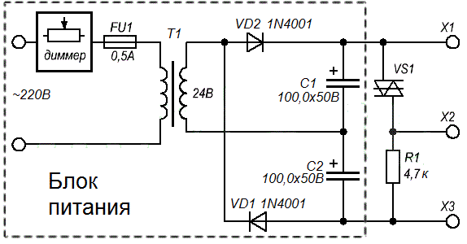
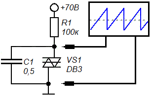

Проверка исправности динистора DB3
Простым мультиметром можно определить только короткое замыкание в динисторе, в этом случае он будет пропускать ток в обоих направлениях.
Для полной проверки работоспособности динистора DB3 необходимо плавно подать напряжение и определить при каком его значении происходит пробой и появляется проводимость полупроводника.
Для этого понадобится регулируемый источник питания постоянного напржения от 0 до 50 В (рис. 1) . В качестве регулятора напряжения применен диммер, используемый для регулировки комнатного освещения. Трансформатор с выходным напряжением 24 В. Диоды VD1, VD2 и конденсаторы С1, С2 образуют однополупериодный удвоитель напряжения и фильтр.

Этапы проверки:
- Установите нулевое напряжение на выводах Х1 и Х3. Подключите вольтметр постоянного тока к Х2 и Х3. Медленно увеличивайте напряжение. При достижении напряжение на исправном динисторе около 30 В (по datasheet от 28 В до 36 В), на R1 резко поднимется напряжение примерно до 10-15 В. Это связано с тем, что динистор проявляет отрицательное сопротивление в момент пробоя.
- Медленно поворачивая ручку диммера в сторону уменьшения напряжения источника питания, и на уровне примерно от 15 до 25 В напряжение на резисторе R1 должно резко упасть до нуля.
- Необходимо повторить шаги 1 и 2, но уже подключив динистор наоборот.
При наличии осциллографа, можно собрать на тестируемом динисторе DB3 релаксационный генератор (рис. 2).

В данной схеме конденсатор заряжается через резистор сопротивлением 100 кОм. Когда напряжение заряда достигает напряжение пробоя динистора, конденсатор резко разряжается через него, пока напряжение не уменьшится ниже тока удержания, при котором динистор закрывается. В этот момент (при напряжении около 15 В) конденсатор опять начнет заряжаться, и процесс повторится.
Период (частота) с начала заряда конденсатора и до пробоя динистора зависит от емкости самого конденсатора и сопротивления резистора. При постоянном сопротивлении резистора в 100 кОм и напряжении питания 70 В емкость будет следующая:
- C = 0,015 мкФ - 0,275 мс.
- С = 0,1 мкФ - 3 мс.
- C = 0,22 мкФ - 6 мс.
- С = 0,33 мкФ - 8,4 мс.
- С = 0,56 мкФ - 15 мс.
Источник
joyta.ru - Динистор DB3. Характеристики, проверка, аналог, datasheet